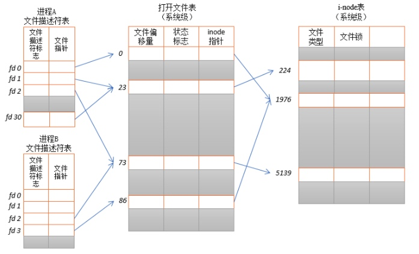

Linux 系统中，把一切都看做是文件，当进程打开现有文件或创建新文件时，内核向进程返回一个文件描述符，文件描述符就是内核为了高效管理已被打开的文件所创建的索引，其是一个非负整数（通常是小整数），用于指代被打开的文件，所有执行I/O操作的系统调用都通过文件描述符。
程序刚刚启动的时候，0是标准输入，1是标准输出，2是标准错误。如果此时去打开一个新的文件，它的文件描述符会是3。
POSIX标准要求每次打开文件时（含socket）必须使用当前进程中最小可用的文件描述符号码，因此，在网络通信过程中稍不注意就有可能造成串话。
文件描述符的限制
在编写文件操作的或者网络通信的软件时，初学者一般可能会遇到“Too many open files”的问题。
这主要是因为文件描述符是系统的一个重要资源，虽然说系统内存有多少就可以打开多少的文件描述符，但是在实际实现过程中内核是会做相应的处理的，一般最大打开文件数会是系统内存的10%（以KB来计算）（称之为系统级限制）。
查看系统级别的最大打开文件数可以使用
> sysctl -a | grep fs.file-max命令查看。
与此同时，内核为了不让某一个进程消耗掉所有的文件资源，其也会对单个进程最大打开文件数做默认值处理（称之为用户级限制），默认值一般是1024，使用 ulimit -n命令可以查看。在Web服务器中，通过更改系统默认值文件描述符的最大值来优化服务器是最常见的方式之一。
文件描述符合打开文件之间的关系
每一个文件文件描述符会与一个打开文件相对应，同时，不同的文件描述符也会指向同一个文件。相同的文件可以被不同的进程打开，也可以在同一个进程中被打开多次。系统为每一个进程维护了一个文件描述符表，该表的值都是从 0 开始的，所以在不同的进程中你看到相同的文件描述符，这种情况下，相同文件描述符有可能指向同一个文件，也有可能指向不同的文件。
具体情况要具体分析，要理解具体概况如何，需要查看3个数据结构：
- 进程级别的文件描述符表
- 系统级别的打开文件描述符表
- 文件系统的 i-node 表
进程级别的文件描述符表的每一条目记录了单个文件描述符的相关信息：
- 控制文件描述符从操作的一组标识（目前此类标志仅仅定义了一个：close-on-exec标志）
- 对打开文件句柄的引用
内核对所有打开的文件的文件维护有一个系统级的描述符表格（open file description table）。有时，也称之为打开文件表（open file table），并将表格中各条目称为打开文件句柄（open file handle）。一个打开文件句柄存储了与一个打开文件相关的全部信息，如下所示：
- 当前文件偏移量（调用read()和write()时更新，或使用lseek()直接修改）
- 打开文件时所使用的状态标识（即，open()的flags参数）
- 文件访问模式（如调用open()时所设置的只读模式、只写模式或读写模式）
- 与信号驱动相关的设置
- 对该文件i-node对象的引用
- 文件类型（例如：常规文件、套接字或FIFO）和访问权限
- 一个指针，指向该文件所持有的锁列表
- 文件的各种属性，包括文件大小以及与不同类型操作相关的时间戳

在进程A中，文件描述符1和30都指向了同一个打开的文件句柄（标号23）。这可能是通过调用dup()、dup2()、fcntl()或者对同一个文件多次调用了open()函数而形成的。
进程A的文件描述符2和进程B的文件描述符2都指向了同一个打开的文件句柄（标号73）。这种情形可能是在调用fork()后出现的（即，进程A、B是父子进程关系），或者当某进程通过UNIX域套接字将一个打开的文件描述符传递给另一个进程时，也会发生。再者是不同的进程独自去调用open函数打开了同一个文件，此时进程内部的描述符正好分配到与其他进程打开该文件的描述符一样。
此外，进程A的描述符0和进程B的描述符3分别指向不同的打开文件句柄，但这些句柄均指向i-node表的相同条目（1976），换言之，指向同一个文件。发生这种情况是因为每个进程各自对同一个文件发起了open()调用。同一个进程两次打开同一个文件，也会发生类似情况。
inode
文件储存在硬盘上，硬盘的最小存储单位叫做”扇区”（Sector）。每个扇区储存512字节（相当于0.5KB）。
操作系统读取硬盘的时候，不会一个个扇区地读取，这样效率太低，而是一次性连续读取多个扇区，即一次性读取一个”块”（block）。这种由多个扇区组成的”块”，是文件存取的最小单位。”块”的大小，最常见的是4KB，即连续八个 sector组成一个 block。
文件数据都储存在”块”中，那么很显然，我们还必须找到一个地方储存文件的元信息，比如文件的创建者、文件的创建日期、文件的大小等等。这种储存文件元信息的区域就叫做inode，中文译名为”索引节点”。每一个文件都有对应的inode，里面包含了与该文件有关的一些信息。
inode的内容
inode包含文件的元信息，具体来说有以下内容：
- 文件的字节数
- 文件拥有者的 user id
- 文件的 group id
- 文件的读、写、执行权限
- 文件的时间戳，共有三个：ctime指inode上一次变动的时间，mtime指文件内容上一次变动的时间，atime指文件上一次打开的时间。
- 链接数，即有多少文件名指向这个inode
- 文件数据block的位置
可以用 stat 命令，查看某个文件的inode信息：
Documents stat MySql性能优化.itmz
16777221 20069263 -rw-r--r-- 1 qinshengke staff 0 56688 "Nov 22 17:58:39 2020" "Oct 8 22:59:08 2020" "Nov 25 21:16:16 2020" "Oct 8 22:59:08 2020" 4096 112 0x40 MySql性能优化.itmz
inode 大小
inode也会消耗硬盘空间，所以硬盘格式化的时候，操作系统自动将硬盘分成两个区域。一个是数据区，存放文件数据；另一个是inode区（inode table），存放inode所包含的信息。
每个inode节点的大小，一般是128字节或256字节。inode节点的总数，在格式化时就给定，一般是每1KB或每2KB就设置一个inode。假定在一块1GB的硬盘中，每个inode节点的大小为128字节，每1KB就设置一个inode，那么inode table的大小就会达到128MB，占整块硬盘的12.8%。
查看每个硬盘分区的inode总数和已经使用的数量，可以使用df命令。
Documents df -i
Filesystem 512-blocks Used Available Capacity iused ifree %iused Mounted on
/dev/disk1s5s1 489620264 29178328 279123384 10% 563932 2447537388 0% /
devfs 689 689 0 100% 1192 0 100% /dev
/dev/disk1s4 489620264 4194344 279123384 2% 2 2448101318 0% /System/Volumes/VM
/dev/disk1s2 489620264 559648 279123384 1% 788 2448100532 0% /System/Volumes/Preboot
/dev/disk1s6 489620264 512 279123384 1% 14 2448101306 0% /System/Volumes/Update
/dev/disk1s1 489620264 175013440 279123384 39% 915827 2447185493 0% /System/Volumes/Data
map auto_home 0 0 0 100% 0 0 100% /System/Volumes/Data/home
/dev/disk2s2 976066560 760332288 215734272 78% 2970048 842712 78% /Volumes/QSK
/dev/disk3s2 3366848 2497576 869272 75% 4547 4294962732 0% /Volumes/VMware Fusion 12.1.0 for Mac
查看每个inode节点的大小，可以用如下命令：
sudo dumpe2fs -h /dev/hda | grep "Inode size"
由于每个文件都必须有一个inode，因此有可能发生inode已经用光，但是硬盘还未存满的情况。这时，就无法在硬盘上创建新文件。
inode 号码
每个inode都有一个号码，操作系统用inode号码来识别不同的文件。
这里值得重复一遍，Unix/Linux系统内部不使用文件名，而使用inode号码来识别文件。对于系统来说，文件名只是inode号码便于识别的别称或者绰号。
表面上，用户通过文件名，打开文件。实际上，系统内部这个过程分成三步：首先，系统找到这个文件名对应的inode号码；其次，通过inode号码，获取inode信息；最后，根据inode信息，找到文件数据所在的block，读出数据。
使用ls -i命令，可以看到文件名对应的inode号码
inode的特殊作用
由于inode号码与文件名分离，这种机制导致了一些Unix/Linux系统特有的现象。
- 有时，文件名包含特殊字符，无法正常删除。这时，直接删除inode节点，就能起到删除文件的作用。
- 移动文件或重命名文件，只是改变文件名，不影响inode号码。
- 打开一个文件以后，系统就以inode号码来识别这个文件，不再考虑文件名。因此，通常来说，系统无法从inode号码得知文件名。